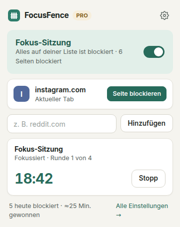
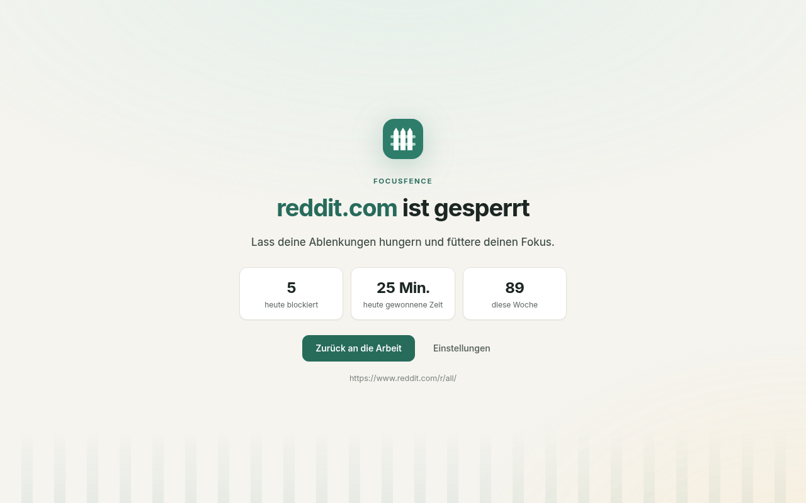
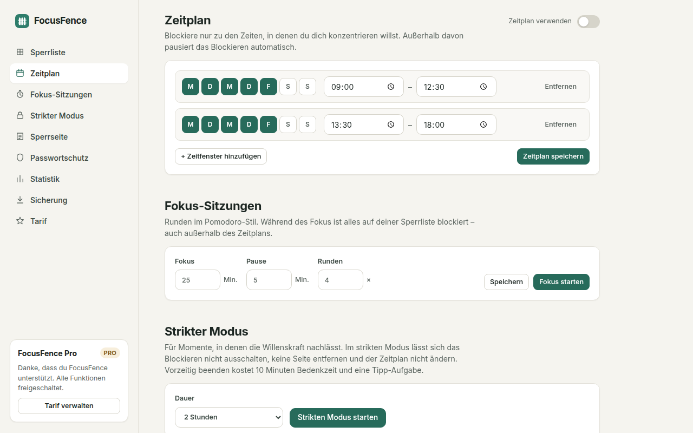
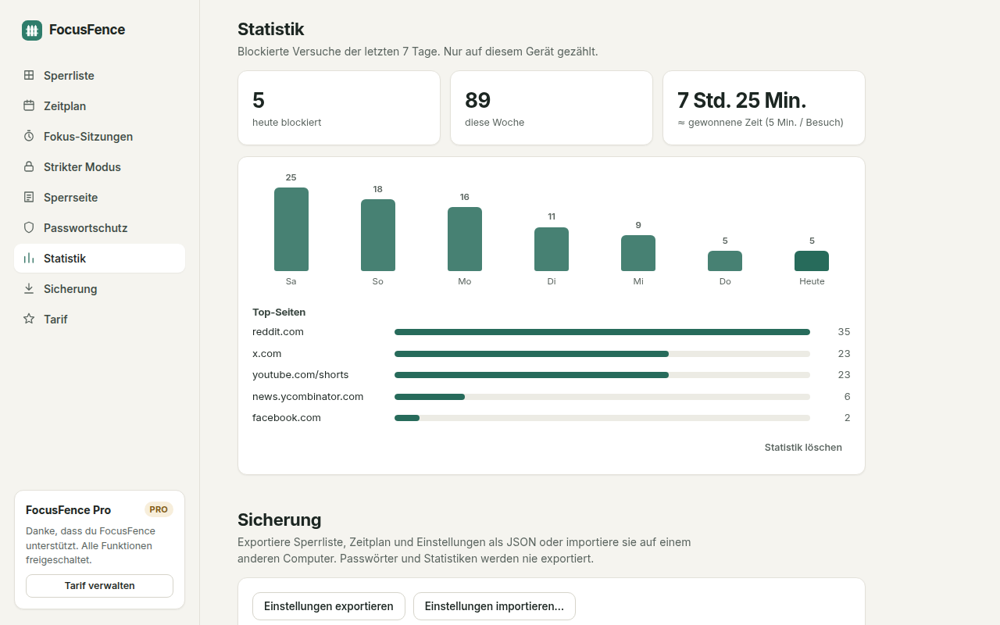

Website-Blocker für Chrome
Zäunen Sie endlose Feeds ein.
FocusFence sperrt mit einem Klick die Websites, die Ihnen die Aufmerksamkeit rauben. Ganz Reddit sperren oder nur YouTube Shorts. Fokuszeiten festlegen. Und wenn die Willenskraft nachlässt: Strikt-Modus an.
Für unbegrenzt viele Websites dauerhaft kostenlos · Kein Konto · Kein Tracking


Alles, was Sie für den Fokus brauchen. Nichts, was Sie nicht brauchen.
Website mit einem Klick sperren
Fenster öffnen und auf Seite blockieren klicken. Wer reddit.com sperrt, sperrt auch old.reddit.com, m.reddit.com und alle anderen Subdomains.
Nur den schlechten Teil sperren PRO
Sperren Sie youtube.com/shorts und behalten Sie den Rest von YouTube für Tutorials und Vorträge. Auch Shorts, die Sie innerhalb von YouTube anklicken, werden gesperrt. Stichwort-Regeln sperren jede Adresse, die ein bestimmtes Wort enthält.
Zeitpläne PRO
Nur während der Arbeitszeit sperren, an den Tagen Ihrer Wahl. Auch Zeiträume über Mitternacht funktionieren, z. B. 22:00–06:00 für besseren Schlaf.
Pomodoro-Sitzungen PRO
Getaktete Fokusrunden und Pausen. Während Sie sich konzentrieren, ist Ihre ganze Liste gesperrt. Der Countdown erscheint auf dem Symbol in der Symbolleiste.
Strikt-Modus PRO
Solange der Strikt-Modus läuft, lässt sich die Sperre nicht abschalten und keine Website entfernen. Wer früher aufhören will, wartet 10 Minuten und tippt einen Text ab.
Statistik, Passwortschutz & mehr PRO
Sehen Sie gesperrte Aufrufe pro Website und die gewonnene Zeit. Schützen Sie die Einstellungen mit einem Passwort, schreiben Sie Ihre eigene Sperrnachricht, exportieren und importieren Sie Ihre Einrichtung.


Ihre Daten bleiben auf Ihrem Gerät
Sperrliste, Einstellungen und Statistik liegen im lokalen Speicher von Chrome. Kein Konto, keine Analyse, keine Werbung.
FocusFence liest Ihre Seiten nicht
Gesperrt wird über die in Chrome eingebaute Regel-Engine (declarativeNetRequest). FocusFence sieht nie den Inhalt der Seiten, die Sie besuchen.
Minimale Berechtigungen
FocusFence fragt den Zugriff Website für Website an, nur für Websites, die Sie sperren. Lehnen Sie ab, bleibt die Website trotzdem gesperrt.
Einfache Preise
Kostenlos
- Unbegrenzt viele gesperrte Websites
- Inklusive Subdomains
- Sperren mit einem Klick im Fenster
- Ein/Aus-Schalter
- Ruhige Sperrseite
Pro monatlich
- Alles aus Kostenlos
- Zeitpläne
- Sperren nach Pfad und Stichwort
- Pomodoro-Sitzungen
- Strikt-Modus
- Passwortschutz, Statistik, eigene Nachricht, Sicherung
Pro jährlich 44 % sparen
- Alles aus Pro monatlich
- 12 Monate für weniger als den Preis von 7
Zahlungen werden von ExtensionPay (Stripe) abgewickelt. Preise in US-Dollar.
Fragen
Kann ich YouTube Shorts sperren und YouTube weiter nutzen?
Ja, mit Pro. Fügen Sie youtube.com/shorts als Pfad-Regel hinzu. youtube.com, Videos und die Suche funktionieren weiter. Links zu Shorts und die Navigation zu Shorts innerhalb von YouTube werden gesperrt.
Sperrt reddit.com auch old.reddit.com?
Ja. Eine Domain-Regel gilt für alle Subdomains, in Kostenlos und Pro.
Warum fragt Chrome nach einer Berechtigung, wenn ich eine Website hinzufüge?
Chrome erlaubt einer Erweiterung nur auf Websites, auf die sie Zugriff hat, ihre eigene Sperrseite anzuzeigen. FocusFence fragt nur nach dieser einen Website. Lehnen Sie ab, bleibt die Website gesperrt, Sie sehen dann aber die Fehlerseite von Chrome statt der Sperrseite von FocusFence.
Lässt sich der Strikt-Modus umgehen?
Ehrliche Antwort: Chrome erlaubt immer, eine Erweiterung zu deaktivieren oder zu entfernen, und FocusFence kann die Erweiterungsseite nicht sperren. Eine zeitlich begrenzte Strikt-Sitzung wird pausiert, solange FocusFence aus ist, ihre Zeit läuft also nicht im Hintergrund ab. Inkognito-Fenster sind nur abgedeckt, wenn Sie FocusFence im Inkognito-Modus zulassen, und FocusFence warnt Sie, wenn das nicht der Fall ist. Andere Browser und Geräte sind nicht abgedeckt.
Welche Daten erheben Sie?
Keine. Siehe die Datenschutzerklärung. Der einzige Netzwerkverkehr ist die Lizenzprüfung durch ExtensionPay, und auch die erst, nachdem Sie sich für Pro entschieden haben.
Ist FocusFence Open Source?
Ja, unter der GNU AGPL v3. Zum Quellcode.